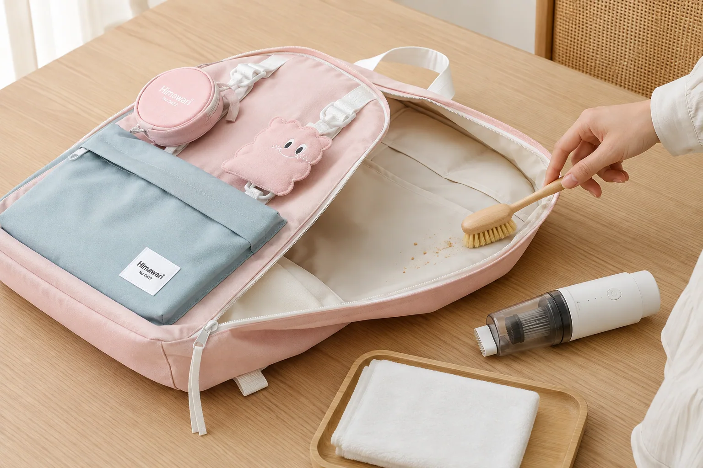
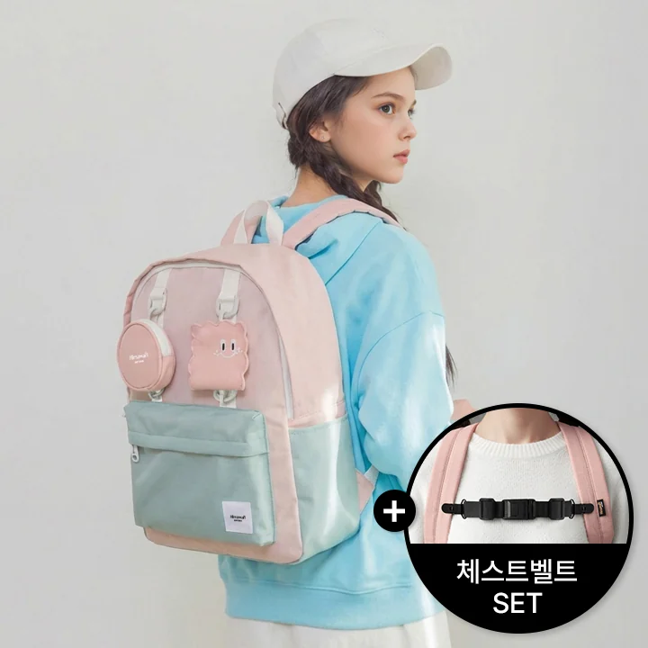

백팩 안쪽을 비우면 보이는 관리 범위

백팩 안쪽을 열면 전날 받았던 종이와 작은 부스러기가 같은 모서리에 남아 있을 수 있습니다. 겉면은 자주 보지만 주머니 바닥은 물건을 꺼내기 전까지 잘 보이지 않습니다. 안쪽 정리의 시작은 가방 전체를 세척하는 일이 아니라 무엇이 남아 있는지 구분하는 데 있습니다. 개인 카드와 영수증을 꺼내고, 손으로 모을 수 있는 작은 조각과 별도 관리가 필요한 얼룩을 나누면 할 작업의 범위가 좁혀집니다.
가방의 관리 표시에서 허용한 세척과 건조 방법을 먼저 읽습니다. 물이나 세정제를 사용하는 것은 그 범위에서 진행하고, 정보가 없는 부위는 모델과 현재 상태를 함께 문의할 수 있습니다. 안감 소재를 모르는데 일반적인 원단 세탁법을 적용하지 않습니다. 이 범위를 정한 뒤에는 비우기와 분류를 충분히 구체적으로 할 수 있습니다. 청소할 면이 보이도록 실제 주머니를 하나씩 열고 꺼낸 물건을 놓을 자리를 마련하면 됩니다.
주머니를 비우는 순서
탁자에 개인 소지품을 둘 면과 처리할 종이를 둘 면을 나눕니다. 가방의 큰 공간부터 꺼내고 그다음 실제로 있는 작은 주머니를 엽니다. 열쇠나 동전처럼 작은 물건이 종이 아래에 남아 있으면 손으로 먼저 챙깁니다. 모양이 비슷한 확인표와 오래된 영수증은 바로 버리기보다 필요한 기간과 내용을 구분합니다. 가방을 비운 뒤에도 이런 판단이 남아 있으므로, 소지품을 다시 넣을 곳과 집에서 보관할 곳을 먼저 정해둘 수 있습니다.
안쪽 바닥과 모서리는 빛이 닿는 방향으로 놓아 살펴봅니다. 큰 입구에서 모두 보이지 않는 경우에는 가방의 방향을 바꾸고 실제 열린 주머니 안을 각각 봅니다. 가방을 억지로 뒤집어 모든 면을 한 번에 드러낼 필요는 없습니다. 분리 가능한 바닥판이나 파우치가 있는 제품이라면 설명된 방식으로 따로 놓습니다. 고정된 부위를 청소하려고 뜯지 않고 열 수 있는 공간부터 비우면 다시 조립할 물건의 범위도 분명합니다.
예를 들어 앞주머니에는 필기구와 영수증이 있고 큰 공간에는 파일과 간식 포장이 있었던 날을 생각해봅니다. 필기구는 사용할 묶음으로 돌아가고 영수증은 보관 목적에 따라 갈립니다. 빈 포장은 처리할 물건이고 모서리에 남은 조각은 가방 안에서 따로 모을 대상입니다. 이렇게 나누면 청소 도구를 쓰기 전에 무엇이 개인 물건인지 알아볼 수 있습니다. 청소기나 솔을 사용할 계획이라면 작은 소지품이 빠져 있는지와 제품의 허용 범위를 함께 봅니다.
관리할 실제 가방의 예시로 Himawari No.0422 제품 정보를 참고할 수 있습니다. 자신의 가방에서 어느 주머니를 열었는지, 무엇이 남아 있는지를 제품 정보와 대조하는 방식입니다. 안쪽 사진이 필요하다면 문제의 면만 보이게 촬영하고 카드나 개인 문서는 먼저 치웁니다. 현재 상태와 모델 정보를 같이 남기면 모서리의 부스러기를 정리하려는지, 얼룩에 별도 처리가 필요한지 질문을 구체적으로 할 수 있습니다.

마른 조각과 얼룩이 다른 이유
마른 종이 조각이나 포장 부스러기는 가방에 붙은 얼룩과 다른 대상입니다. 손으로 꺼낼 수 있는 것은 먼저 모으고 남은 면을 봅니다. 제품에서 허용한 도구를 쓸 경우에는 안쪽에서 입구까지 어떤 방향으로 움직이는지 알아두면 떨어진 것을 다시 찾기 쉽습니다. 작은 조각을 모았는데도 얼룩이 남았다면 마른 정리가 끝난 것과 세척이 필요한 상태를 구분할 수 있습니다. 한 작업을 계속 세게 반복해서 다른 종류의 흔적까지 해결하려 할 필요는 없습니다.
음료 용기가 샌 흔적을 발견했다면 가방과 용기를 같이 보되 처리는 각각 정합니다. 용기의 뚜껑이나 포장 상태는 그 제품의 설명에 따라 보고, 가방의 흔적은 관리 표시가 허용한 방법으로 다룹니다. 표면을 처리하고 같은 용기를 그대로 다시 넣으면 다음 사용에서 같은 질문이 남을 수 있습니다. 무엇이 어떤 면과 닿았는지 알아두면 배치를 바꿀 이유도 보입니다. 얼룩의 원인을 확실히 모르면 짐작해 세정제를 고르기보다 현재 모습을 먼저 남겨둘 수 있습니다.
허용된 부분 관리를 한다면 사용할 도구와 세정 제품을 한 곳에 정리합니다. 처리한 면과 아직 손대지 않은 면이 섞이지 않게 작업 범위를 좁혀두는 방식입니다. 작은 면을 시험하도록 지시되어 있다면 해당 지침을 따르고 표면이나 색이 달라지면 더 넓게 진행하지 않습니다. 사용한 제품의 이름과 어느 부위에 적용했는지 남겨두면 나중에 상담할 때 기억에만 의존하지 않아도 됩니다. 안쪽 전체를 한 번에 처리하는 목표를 앞세우지 않고 필요한 면부터 판단합니다.
비어 있는 가방에서 다시 고를 짐
수분을 사용했다면 건조까지 해당 제품의 표시를 따릅니다. 겉으로 보이는 면뿐 아니라 접힌 바닥과 주머니의 상태를 다시 보고 넣을 물건을 옆에 둡니다. 아직 관리할 부분이 남았다면 다른 가방을 쓸지 정할 수 있습니다. 다음 일정 때문에 기존 짐을 서둘러 되담는 것이 목표는 아닙니다. 정리한 가방에 무엇을 새로 넣을지 생각하면 사용하지 않는 종이나 일정이 끝난 소품을 다시 채우지 않을 기회가 됩니다.
꺼냈던 물건 가운데 매일 쓸 것만 원래 자리로 돌려놓습니다. 특정 수업이나 출장에서 썼던 소품은 그 묶음의 보관 장소로 옮기고, 필요한 종이는 집의 문서 자리로 둡니다. 부스러기가 많이 남았던 포장을 계속 가져갈 계획이라면 운반 형태를 다시 생각해볼 수 있습니다. 종이와 간식 포장이 같은 위치에 쌓였다면 다음부터 받을 자료의 빈자리와 포장의 임시 자리를 따로 정하는 방식이 가능합니다. 청소 이후에 물건을 되담는 과정이 다음 관리의 범위도 바꿉니다.
마지막에는 개인 소지품과 사용한 도구가 모두 제자리로 돌아갔는지 봅니다. 가방 안에 남은 작은 조각과 실이 있는지, 여밈 가까이에 원단이 접힌 면이 있는지를 살핍니다. 움직임이 평소와 다른 부품은 청소와 수선의 질문을 나누어 남길 수 있습니다. 다음 정리에서는 모든 면을 새것처럼 만들려 하기보다 계속 무언가 모이는 주머니부터 비워볼 수 있습니다. 어떤 물건이 그 자리를 사용했는지 알면 내부 청소와 짐의 배치를 함께 바꾸기 쉽습니다.